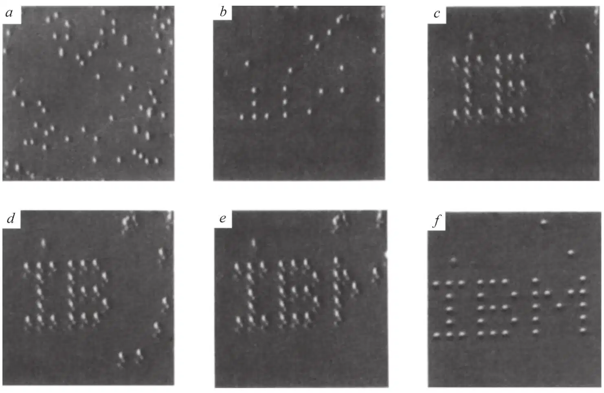
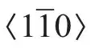
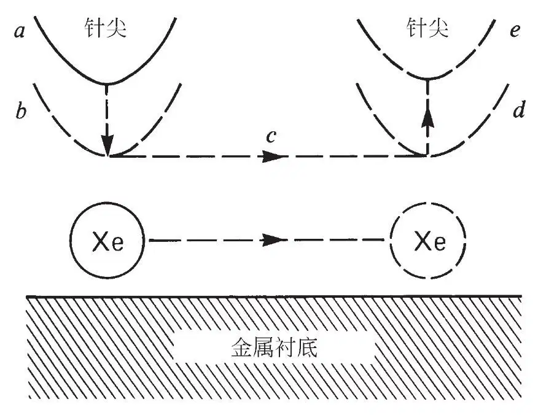
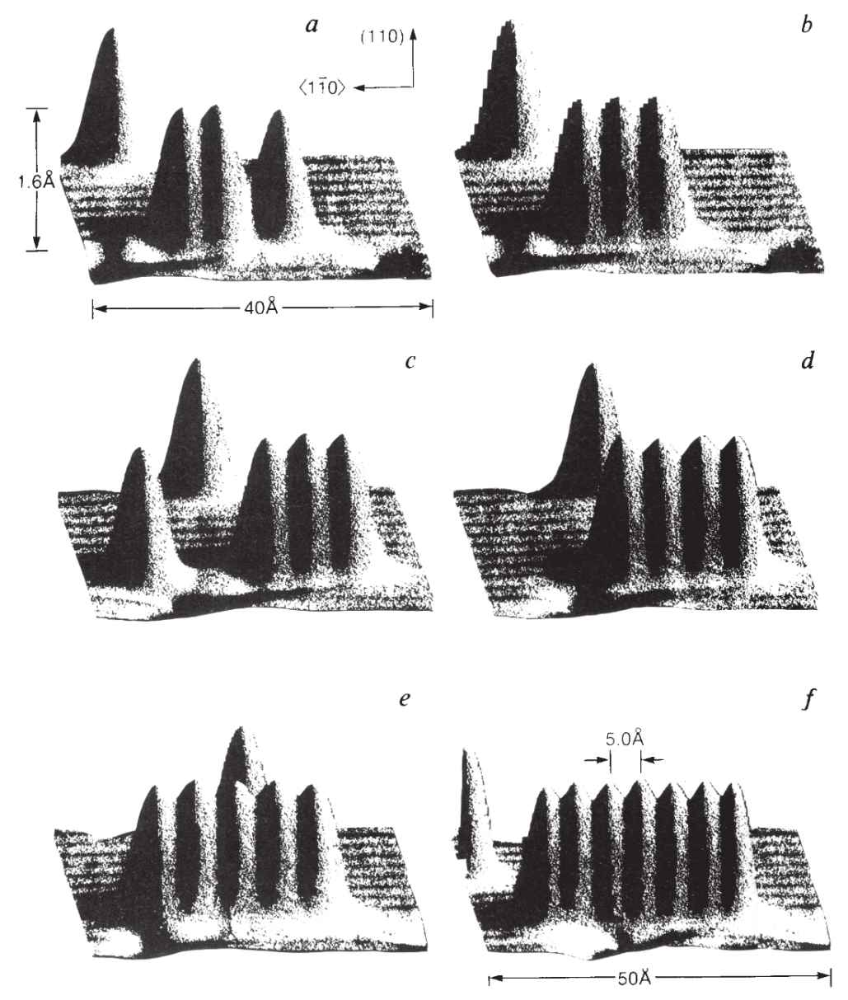

英文
英文艾格勒，施魏策尔
编者按
扫描隧道显微镜发明于20世纪80年代初，是在原子级分辨率上对材料表面成像的一种工具。随着它的针状金属尖端在材料表面上移动，电子通过隧道效应穿过针尖与样品表面的间隙从而产生电流，电流强度随间隙大小不同而发生改变，从而描绘出材料表面的形貌。20世纪80年代后期，通过在探针尖端应用电脉冲可以移动或改变材料表面。本文中加利福尼亚IBM研究实验室的唐·艾格勒和埃里克·施魏策尔描述了利用针尖在材料表面拖动单个氙原子并进行任意定位。他们用35个原子拼写出的公司名称成为纳米技术的一个标志。 英文
自从宾尼希和罗雷尔在20世纪80年代初发明扫描隧道显微镜（STM）[1,2]以来，它就以空前的分辨率为我们提供了关于材料表面和被吸附原子及分子的图像。STM还被用来修饰表面，例如将分子局部地固定在表面上[3]，以及将一个原子从STM的探针尖端转移到材料表面[4]。本文中我们报道了在低温下（温度为4 K）利用STM以原子级精度把单个氙原子定位在单晶镍表面上。这种能力使我们可以逐个原子地制作我们设计的基本结构。我们所描述的这个过程原则上同样适用于分子。从已报道的表面上单个原子的独特性质[5,6]来看，最终实现功能器件最小化的可能性是显而易见的。 英文
STM的探针尖端总是对被吸附原子施加一个有限的力。这个力中同时包含着范德华力和静电力的贡献。通过调整针尖的位置和电压，我们可以调节此力的大小和方向。此外，考虑到沿着表面移动原子比将其拖离表面更省力这一事实，我们可以通过设置这些参数，使STM针尖拉动一个原子穿过表面的同时，仍保持该原子结合在表面上。出于以下原因我们决定研究镍（110）面上的氙：表面电势起伏可以足够大，使得我们可以对氙原子成像，而又不会不经意地移动它们；另外在需要时，表面电势的起伏还可以足够小，使得我们可以施加足够的侧向力在表面上移动氙原子。 英文
实验在一台含有超高真空系统的STM上进行，同时系统被冷却至4 K。将容纳显微镜的整个样品室冷却至4 K，通过吸收残余气体可以降低样品表面的污染速率，使其在几星期内没有可测量到的污染发生。低温保证了样品和显微镜的稳定性，这使得人们可以对单个原子进行一次长达数天的实验。我们已证明这一稳定性是进行实验的必要操作条件。尽管如此，还要注意到，我们所描述的在表面上移动原子的过程本质上是不依赖于温度的。 英文
我们利用氩离子对镍样品进行反复喷溅，在氧分压中退火以除去镍表面的碳，且经快速退火完成样品处理。在冷却至4 K后，用STM对样品成像，确定其表面足够清洁。图1a是将氙添加到预期覆盖度后在恒定电流扫描条件下获得的表面图像。该图像是在相对于样品0.010 V的针尖偏压和10–9 A的隧道电流条件下获得的。每个氙原子看起来就像表面上一个1.6 Å高的团块，并且明显地处于随机位置。在隧道结阻抗的条件下，氙原子与针尖的相互作用非常弱，因此在成像过程中，氙原子基本不受到扰动。 英文

图1．在镍（110）表面上构建排列成图案的氙原子阵列过程中拍摄的一系列STM图像。根据表面的斜率确定灰度。对镍表面的原子结构未进行分辨。

方向为垂直指向。a，加入氙之后的表面。b~f，构建过程中的各个阶段。每个字母从顶部到底部是50 Å。 英文
按照图2所示的一系列步骤来移动单个原子。用上文所描述的无干扰成像模式操作显微镜，找到待移动原子，瞄准其目的地。然后停止扫描，将针尖置于待移动原子的正上方（a）。接着，我们通过将针尖向着原子下降（b）来增加针尖–原子之间的相互作用；通过增大所需隧道电流值，一般是达到1×10–8 A至6×10–8 A的范围时，即可实现这一点，这一电流范围使得针尖移向原子，直至达到新的隧道电流值。接着，我们在闭合回路的条件下移动针尖穿过表面（c），以4 Å/s的速度移向目的地（d），同时始终拖带着氙原子。然后，通过将隧道电流减少到成像所需的值使针尖后撤（e）。这就有效地终止了氙与针尖之间的吸引力，将氙留在了表面上所预期的位置。 英文

图2．在表面移动原子过程的示意图。定位原子，针尖位于其正上方（a）。将针尖降低到一定位置（b），在针尖随后移过表面（c）到达目的地（d）期间，原子–针尖之间的吸引力足以维持原子固定在针尖下方。最后，将针尖后撤到一个位置（e），此时原子–针尖相互作用小到可忽略，把原子留在表面上的一个新位置。 英文
图1是在我们首次构建排列成图案的氙原子阵列过程中所拍摄的一系列图像，证明了我们能够以原子级精度放置原子。氙原子间距的精确周期可以利用背景镍表面的晶体结构（在图1中没有进行分辨）得到。镍（110）表面有一个未重现出来的矩形单胞，其方向为矩形表面单胞的短边处于图像中的垂直方向。这些氙原子间隔排列在一个矩形网格中，水平方向上为四个镍单胞长，垂直方向上为五个晶胞长，面积相当于14 Å×12.5 Å。 英文
尽管STM针尖是用钨丝制成的，但是我们并不知道针尖最外围原子的真实化学特性与结构。我们发现对于任何给定的针尖和偏压，都存在着一个临界高度，针尖必须位于这个高度以下才能沿着平行于镍原子阵列的方向移动氙原子，还存在着一个垂直于镍原子阵列移动时的更低临界高度。这与如下的简单模型是相一致的，其中氙与金属表面的相互作用近似于单个镍原子的成对相互作用。简单的研究表明外加电压的大小和方向对于临界针尖高度没有显著影响。这意味着针尖与氙原子之间的主要作用力应归结为范德华相互作用，但是这个初步结论还需要进一步的研究。 英文
在图3中，我们给出了一系列图像来说明怎样利用这个过程来搭建一个简单结构，即线型多聚体。首先，将氙原子滑入一个选定的镍原子行中。接下来，沿着该行滑动一个氙原子使其到达一个能与邻近氙原子连接形成二聚体的位置。我们重复这一过程，形成一个线型三聚体，接着是线型四聚体，依此类推。从这些图像中，我们发现沿着镍原子（110）表面上方向的线型氙原子链是稳定的，氙原子沿着一行镍原子间隔占据表面单胞。使氙原子堆积得更近的尝试是不成功的。我们发现沿着行方向的氙–氙间距是相同的（除了末端效应以外），误差在0.2 Å以内。 英文

图3．在镍（110）表面上构建线型氙原子链的各个阶段。在这些图像中单个氙原子显示为1.6 Å高的突出物。镍原子行看起来犹如明暗交替的条纹。可以看到镍表面有若干处点缺陷。a，已装配好的氙原子二聚体。在二聚体的右侧，一个氙原子已进入恰当的位置，准备形成一个三聚体。b，氙原子线型三聚体的形成。c~f，构建线形七聚体的各个阶段，这个过程能够在一小时内完成。氙原子间距为5 Å，各自占据相邻的镍表面单胞。 英文
我们预期将会有一类特定的被吸附的原子和分子可以用这种方法来定位。很多新的研究途径展现在我们面前。应该有可能以这种方式来组装或修饰某些分子。我们能够构建出用其他办法无法得到的新型结构。这将引出一系列新的表面研究工作，即利用STM构建吸附层结构并探查其性质。这样，离实现原子尺度的逻辑电路和其他器件的梦想又近了一步。 英文
（王耀杨 翻译；王琛 审稿）